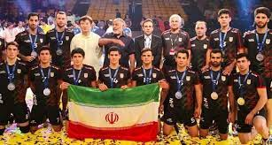

Iran has announced a 14-member team.
Iran Kabaddi has announced its potential team for the preparations of the 19th Asian Games scheduled in September. The defending champions, Iran, have declared their prospective team. Iran has selected a 14-member team for this camp, which includes several veteran players like Fazl Atrachali and Mohammad Reza Shadloo.
The Asian Games will be hosted in China this time, in September. Iran claimed the gold medal in the previous edition.
They shattered the dreams of the Indian team winning the gold medal. Iran defeated India in the semifinals and then triumphed over South Korea in the final with a score of 26-16 to clinch the gold medal.
Once again, Iran’s team is showing impressive strength.
Iran’s national camp will take place in Kish Island
It will be held from August 17 to August 31, and athletes who perform well here will be selected for the Asian Games team. Notably, players like Heidarali Akrami, Mohammad Nabibakhsh, Reza Mirbagheri, and Mohammad Reza have been chosen for the camp. Most of these players have participated in the Pro Kabaddi League hosted in India. Gholamreza Mazandarani has been appointed as the head coach of the Iranian team, while Vahid Kharaqani will take on the role of assistant coach.
Here is Iran’s complete team for the Asian Games camp:
Fazel Atrachali, Heidar Ali Akrami, Amir Hussein Bastami, Milad Jabbari, Vahid Rezaei Mehr, Mohammad Reza Shadlu, Moin Shafaghi, Amir Mohammad Jafari Danesh, Amin Ghorbani, Mohammad Reza Kabudrahangi, Reza Mirbagheri, Hamid Mirzaei Nadar, Alireza Mirzayan, Mohammad Kazem Naseri, and Mohammad Ismail Nabibaksh.
It’s worth mentioning that, similar to the previous time, Iran aims to establish its dominance in the Asian Games this year as well. The team possesses several seasoned players who have the potential to become champions. Many players have experience in the Pro Kabaddi League, and this could greatly benefit them. This is why Iran is expected to face the strongest competition from the Indian team, especially since they have played extensively with Indian players in the PKL.
On the other hand, the Indian team will also strive to reverse their defeat from the previous Asian Games.